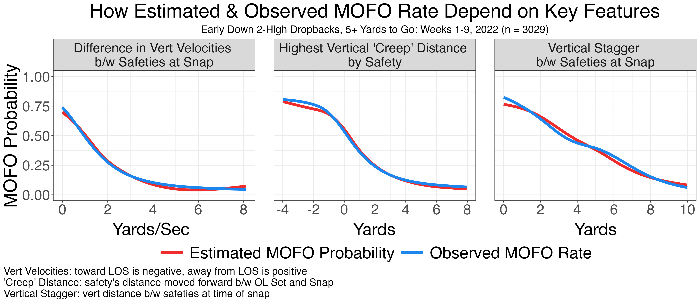

Safety
Entropy: A Measure of Safeties’ Predictability
Ryan
Brill, Cole Jacobson, Justin Lipitz, Jonathan Pipping
Motivation
We were fortunate to have an insightful conversation with quarterback
Josh Rosen, forming the inspiration for our project. Weaving anecdotes
from his time in the NFL with X’s and O’s, he emphasized something along
the lines of:
If I could know with 100% certainty what the safeties would do, my life would be twice as easy.
Why? For example, suppose the offense runs a "Hoss"
concept (hitch-seam combo) on both sides. If the offense knows the
defense is playing Middle-Of-Field-Closed
(MOFC)
coverage – one safety in the middle of the field – there is a strong
chance one of the vertical routes will be open, because the safety can’t
cover both. If the offense knows the defense is playing
Middle-Of-Field-Open (MOFO),
the QB’s first read is likely one of the hitches, since safeties can
cover both slot routes. Having that pre-snap knowledge gives the offense
a real advantage.
Hence, in this study, we evaluate the play-level and team-level
predictability of safeties. We devise a novel and powerful model which,
given safeties’ pre-snap positioning and movements, estimates their
post-snap middle-of-field coverage. We then quantify a defense’s overall
level of safety predictability via safety entropy.
Understanding opposing safeties’ degree of unpredictability allows an
offense to tailor its game preparations. From our model, we extract key
features – concrete defensive signals that telegraph what the safeties
will do. In conjunction with play-level safety entropy, these tells can
help safeties and quarterbacks retroactively study safety movements.
Safeties can learn to disguise more effectively, whereas quarterbacks
can work on diagnosing safeties’ signals.
Data
We consider a subset of plays from Weeks 1-9, 2022, focusing on
longer early-down dropbacks (1st & ≥ 10 or 2nd & ≥ 5). We exclude garbage time (win probability ∉ (0.05,0.95)), late-half
plays (half seconds remaining ≤ 30),
and obvious pass situations (xpass ≥ 0.95, using expected
dropback probability from nflFastR).
Our binary outcome variable, MOFO, is
1 if the safeties leave the middle of the field open, else 0. We derive
MOFO from
pff_passCoverage, which we estimate as 90-95% accurate from
film study: MOFO is 1
for 2-Man or variations of Cover 0, 2, 4, or 6 (zero or two deep
safeties post-snap) and 0 for variations of Cover 1 or 3 (one deep
safety). We exclude dropbacks with miscellaneous coverages (e.g.,
Prevent, Goal Line).
We classify a defender as a pre-snap safety if he is ≥ 8.5 yards from the line of scrimmage at
some time between the offensive line being set and the snap, and if he
is not the right-most or left-most defender at the snap. Filtering for
plays with one or two pre-snap safeties yields 4,381 plays (1,352
single-safety, 3,029 two-safety). Just 113 of 7,410 safety-play
combinations (1.5%) deviate from official NFL position labels,
validating our definition.
Model Specification
We want to estimate MOFO
probability, where MOFO
indicates whether the safeties leave the middle of the field open, from
pre-snap safety tracking data.
We define times t0 and tsnap, in seconds, by
t0 = max { − 3.0, tset}
(3 seconds before the snap, or the time the offensive line is set, tset, if tset occurs after) and
tsnap = − 0.1
(just before the snap). For each safety, we record six covariates: his
location (x0,y0)
at t0, his location
(xsnap,ysnap)
at tsnap, and his
velocity (vsnapx,vsnapy)
at tsnap. The
locations are standardized relative to the line of scrimmage (x) and field center (y).
That our covariate space is low-dimensional is a fundamental strength
of our modeling approach. Using too many covariates is dangerous; it is
easy to overfit in our limited data setting (just 4,381 plays). We use
neural
networks (NNs) to capture the complex, nonlinear relationships
between the covariates and response. NNs in particular generalize well
from small datasets (Olson et al.,
2018). We train separate NNs for single- and two-safety plays, each
with one hidden layer (SiLU
activation) and a sigmoid output, by minimizing logloss
in R using Keras.
Model Validation
To validate our model, we compare it to baseline null models that
don’t (or, minimally) use the tracking data. We consider several
baseline logistic regression models:
We conduct a ten-fold cross validation prediction contest and
transform logloss into a more interpretable scale, q = exp (−logloss). Correctly
predicting the outcome variable MOFO with
identical probability q on all
plays produces the same logloss. A higher q reflects a better predictor. The
boxplots below show the cross-validation distributions of q across the ten folds.
The results are encouraging: Predicting what safeties will do after
the snap is much better with tracking data. Our model performs
significantly better (q ≈ 0.65) than the best baseline
model (q ≈ 0.55). That
safeties are difficult to predict, indicated by q ≈ 0.65, makes sense: were it easy,
NFL quarterbacks wouldn’t consider it important. Our 0.10 advantage
across 272 early-down, “regular” dropbacks per team per season is worth
≈ 27 additional “free” plays (where
the QB knows what the safeties will do)!
Further, our model is well-calibrated, visualized below.
Notably, in roughly one-third of plays, the safeties do something
pre-snap that strongly telegraphs their post-snap behavior (1406/4381
plays feature p ∉ [0.1,0.9]).
To understand why those plays are so predictable, we tease out concrete,
interpretable features below.
Measuring
“disguisedness” via Safety Entropy
Given a play’s MOFO
probability p, entropy = − p ⋅ log2(p) − (1−p) ⋅ log2(1−p)
is a natural measure of unpredictability, visualized below. MOFO is
perfectly predictable (entropy = 0)
when p is 0 or 1. MOFO is
most unpredictable (maximal entropy, 1) when p = 1/2. Values of p closer to 1/2 have higher entropy (more uncertain), and
values of p closer to 0 or 1
have lower entropy (more certain).
We measure the unpredictability of a team’s safeties by the mean
safety entropy across all plays, using bootstrapping to quantify
uncertainty. We visualize these entropy rankings below (error bars
denote 90% bootstrapped intervals).
Knowing an opponent’s safety entropy is valuable for game
preparation. For a team facing the high-entropy Rams, coaches can help
scout defensive safeties emulate the Rams’ movements in practice. They
can also help the QB understand that the Rams’ safeties disguise more
successfully than other teams.
Further, we find a very small correlation between a defense’s mean
safety entropy and defensive success. Less predictable safeties (higher
entropy) correspond to better defensive outcomes (lower EPA/play), but
since there are so many other variables that contribute to defensive
results (e.g., player skill), the correlation is very light.
Film Study
We can emit all the jargon we want, but fans, coaches, and analysts
all want to know: how does this show up on the field?
Consider the following examples. In the first, from Buccaneers-Saints
in Week 2, the Bucs begin with two tight ends before TE #41 Ko Kieft
motions into the backfield. The Saints have two pre-snap safeties (#32
Tyrann Mathieu, #6 Marcus Maye). Our model confidently predicts MOFO
coverage (94.0%), a good prediction, as the Saints played Tampa
2.
Now, consider this play from Steelers-Browns one week later. The
Steelers begin with two eligible receivers to each side before TE #81
Zach Gentry motions to the offense’s left. Though the Browns have two
pre-snap safeties (#22 Grant Delpit, #43 John Johnson), our model
confidently predicts MOFC
(0.6% MOFO
probability). This is correct, as the Browns played Cover 1, with
Johnson guarding Gentry.
These plays are ostensibly similar – two pre-snap safeties, both
≥ 10 yards off the LOS during the
entire pre-snap time frame. What made the model provide differing
predictions?
- Response to offensive motion. Each play saw a TE go in
motion, but on Play 1, the Saints’ defense didn’t noticeably react to
Kieft’s movement. On Play 2, Delpit followed Gentry until Delpit crossed
the ball, at which point he pointed to Johnson to take over. The
safeties’ horizontal paths stood out to the model.
- Safeties’ vertical directions. On Play 1, Mathieu and Maye
back-pedal in lockstep, both moving in the same direction at the time of
the snap. But on Play 2, Delpit back-pedals at the snap while Johnson
creeps forward, movements that were slow but significant enough for our
model to capture.
- Vertical stagger between safeties. On Play 1, not only were
Mathieu’s and Maye’s vertical directions similar, but their vertical
locations were also similar, both roughly 14 yards off the ball at the
snap. On Play 2, Delpit was 14.0 yards off the ball during the snap,
while Johnson was 10.6 – a discrepancy that signals MOFC
likelihood.
As demonstrated here, analyzing film in conjunction with model
outputs can provide an edge in the pre-snap chess match. To the naked
eye, these are both two-safety plays which happen to have vastly
different coverage schemes. But nuances in safety movements reveal
signals that foretell post-snap coverages.
Featurization: Key Defensive
Tells
Subtle differences in safety movement in the previous examples appear
to drive the differing predictions, but we aim to formalize this
intuition. Our neural network model operates as a blackbox—its
predictions arise from complex, opaque internal processes—making it
challenging to interpret individual predictions. In this section, we
probe the blackbox, uncovering consistent ways a defense telegraphs its
coverages, enabling offenses to decipher signals on any given play.
The strongest indicators of MOF coverages,
with two safeties, include: vertical stagger (yards
apart) between safeties at the snap, maximum
distance crept forward pre-snap by a safety, and
difference in vertical velocities between safeties
(e.g. one moves forward while the other moves backward) at the
snap. Below, we visualize how these features impact defensive
tendencies. Each red line plots estimated MOFO
probability (y-axis) against
the given feature (x-axis).
MOFO
probability decreases as these features increase. Each blue line uses
the empirical MOFO rate
(smoothed) as the y-variable.
The red lines (predictions) closely mirror the blue lines (base-rates),
further validating our model.

Below, we display features that are strongly negatively correlated
with defensive MOFO
outcomes. The table displays each feature’s correlation with estimated
MOFO
probability (fourth column) and empirical MOFO
rates (third column).

Now, consider single-safety plays. Despite a high overall MOFC rate
(84.4%), we still found signals, visualized below: for each
single-safety play, we plot the safety’s pre-snap change in horizontal
distance relative to MOF (y-axis) against his vertical “creep”
distance (relative to the LOS, x-axis). Dot size is proportional to
estimated MOFO
probability. Larger dots in the upper-left suggest that a safety moving
towards LOS
and away from MOF is associated
with higher MOFO
probability. Conversely, moving away from LOS and towards
MOF
corresponds to lower MOFO
probability.
Overall, we’ve diagnosed many tells an offense should watch for, such
as:
- 2-high plays where a safety creeps 4+ yards forward: 0.93 predicted
MOFC
probability (0.92 empirical MOFC
rate).
- 2-high plays where the safeties’ difference in vertical velocities
at the snap is 4+ yards/second: 0.92 predicted MOFC
probability (0.91 empirical MOFC
rate).
- 1-high plays where the safety is within three yards of MOF (horizontally)
at the snap: 0.88 predicted MOFC
probability (0.87 empirical MOFC
rate).
Conclusion
Our novel metric safety entropy quantifies the
predictability of safeties' post-snap middle-of-field coverage based on
their pre-snap positioning and movement. Low entropy indicates
predictability; high signals unpredictability. We uncovered several core
traits – vertical stagger between safeties, “creep” distance, difference
in vertical velocity, etc. – that can help offenses diagnose what’s
coming. We also evaluated the predictability of each teams’ safeties on
aggregate. An offense who knows its opponent has particularly high or
low safety entropy can adjust its game preparations accordingly (e.g.,
by installing certain tells to their scout defense).
Future Work
Our work has limitations; ideas for improvement include:
- Accounting for all 22 players’ pre-snap movements in our model
- More refined definitions of pre-snap safeties & MOFO
- Including more plays (e.g., later downs, zero pre-snap
safeties)
- Continuous-time MOFO
probability predictions (beyond single-play predictions)
Citations
Olson, M., Wyner, A.J., and Berk, R. (2018). Modern Neural Networks
Generalize on Small Data Sets. NIPS'18: Proceedings of the 32nd
International Conference on Neural Information Processing Systems, Pages
3623 - 3632. https://dl.acm.org/doi/10.5555/3327144.3327279
Acknowledgements
The authors thank Josh Rosen, Paul Sabin, and Abraham Wyner for
helpful discussions.